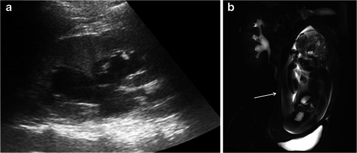
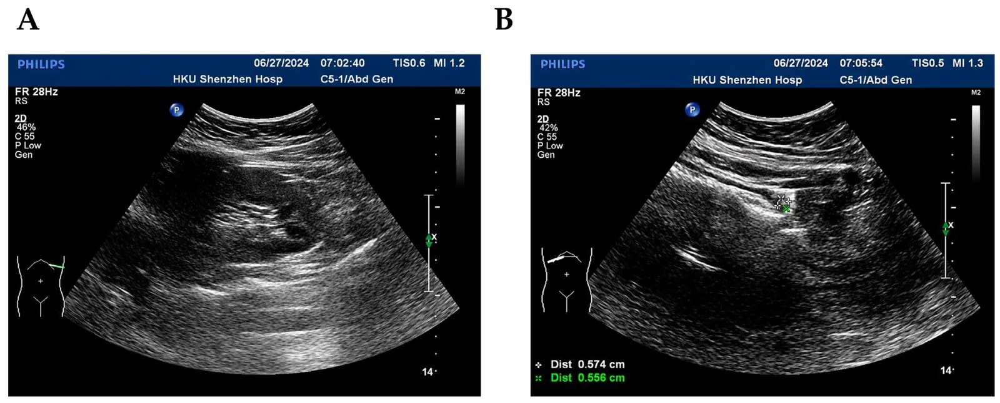
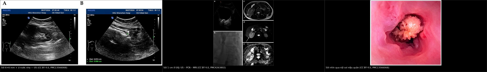
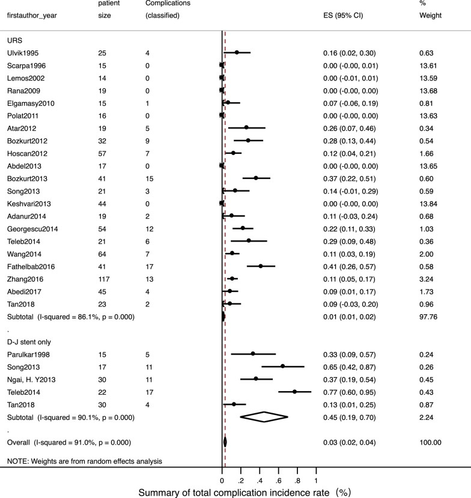
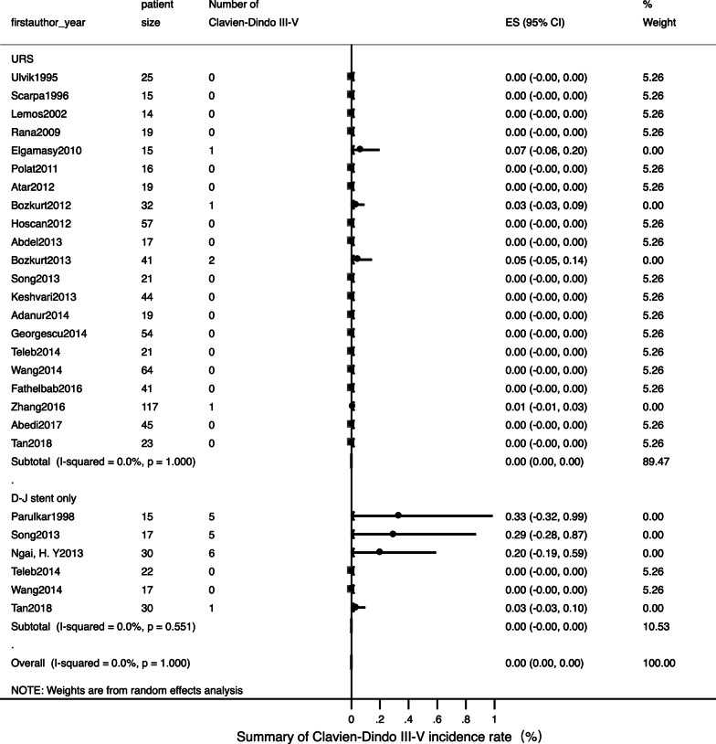
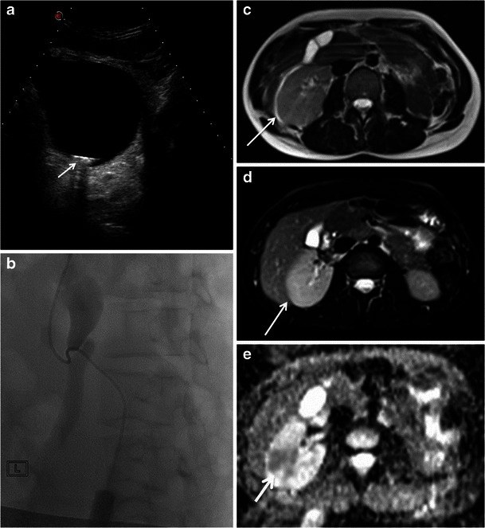
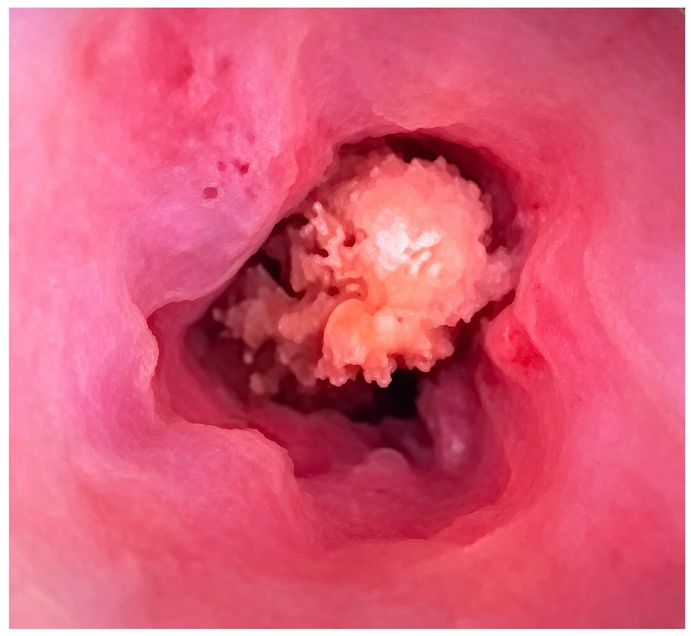

1818 — Sỏi niệu quản ở thai phụ: siêu âm – MRI, dẫn lưu tạm (JJ stent hay nephrostomy) và khi nào nội soi lấy sỏi / Ureteral stones in pregnancy
Tags: pattern:soi pattern:tac-nghen pattern:u-nuoc vung:nieu-quan vung:thai-nhi protocol:sieu-am-bung protocol:MRI-khong-can-tu protocol:CT-lieu-thap score:EAU-2025
Mức chắc chắn (certainty): tổng hợp y văn (literature synthesis) — ghép 5 nguồn mở: tổng quan quản lý sỏi niệu ở thai (Curr Urol 2023, PMC10487296, CC BY-NC-ND), đoàn hệ đa trung tâm URS ở thai 146 ca (EAU Section of Endourology, Eur Urol Open Sci 2025, PMC12159928, CC BY), meta-analysis URS vs JJ stent (25 nghiên cứu, BMC Urol 2022, PMC9476568, CC BY), đoàn hệ 14 năm 120 thai phụ sỏi niệu quản (Front Med 2026, PMC13668503, CC BY) và ca minh họa hình ảnh sỏi + ứ nước trên US/MRU (Insights Imaging 2014, PMC4263802, CC BY và J Clin Med 2026, PMC13566068, CC BY). Số nào nguồn không nêu ghi "chưa rõ".
Câu chốt: ứ nước ở thai phụ KHÔNG đồng nghĩa với tắc nghẽn — ứ nước sinh lý xuất hiện từ tam cá nguyệt II, đỉnh 24–28 tuần, và trong một đoàn hệ 2025 siêu âm thấy ứ nước có độ đặc hiệu chỉ 1,5% cho sỏi. Chẩn đoán đi theo US → MRU → CT liều thấp, và điều trị không nhắm "lấy sạch sỏi" mà nhắm "giải phóng tắc nghẽn + kiểm soát nhiễm": 75–76% sỏi tự ra, nhưng khi có sốt, ứ nước tiến triển, đau tái diễn thì phải can thiệp; URS laser được EAU 2025 xem là lựa chọn hàng đầu khi điều trị nội thất bại, còn JJ stent/PCN là cầu nối.
1. Tổng quan bệnh học – cơ chế hình ảnh
1.1 Vì sao thai phụ dễ có ứ nước và dễ bị sỏi "kẹt" (TẠI SAO)
- Dịch tễ: sỏi niệu gặp ở 0,49% thai kỳ (1/204) theo meta-analysis 4,7 triệu thai (Kirubarajan 2022, dẫn qua PMC10487296); các nguồn khác nêu 1/125 – 1/2.000; đây là nguyên nhân đau bụng không sản khoa hay gặp nhất, gây 1,7 ca nhập viện/1.000 lần sinh; ~99% ở tam cá nguyệt II–III, ~1/4 cần can thiệp (PMC10487296).
- Ứ nước sinh lý: progesterone làm giãn cơ trơn niệu quản, tử cung to chèn ép niệu quản (phải nhiều hơn trái vì đại tràng sigma đẩy tử cung sang phải), thêm táo bón — nên ứ nước bắt đầu tam cá nguyệt II và đỉnh 24–28 tuần (PMC10487296). Vì vậy "ứ nước nhẹ hai bên, không thấy sỏi" là bình thường, không phải bệnh lý.
- Vì sao sỏi gây đau dữ dội: sỏi kẹt ở 1/3 niệu quản làm tăng áp lực trong bể thận → căng bao thận và co thắt niệu quản — đau quặn từng cơn, lan xuống bẹn; nếu có nhiễm kèm tắc kín → viêm thận–bể thận ứ mủ (pyonephrosis) và sốc nhiễm khuẩn, đây là đường dẫn tới tử vong mẹ.
- Vì sao thai kỳ làm nặng thêm hậu quả sản khoa: đau – nhiễm – tắc nghẽn làm tăng co bóp tử cung. Meta-analysis 26.577 thai phụ cho thấy sỏi niệu làm tăng sinh non (OR 1,63; 1,37–1,95), sinh rất non (OR 1,49), tiền sản giật (OR 1,75), tăng huyết áp (OR 2,97), mổ lấy thai (OR 1,31), đái tháo đường thai kỳ (OR 1,84) — nên sỏi niệu ở thai là bệnh có ảnh hưởng sản khoa, không phải "chuyện nhỏ" (Zhou 2021).
1.2 Vì sao nhìn thấy (vật lý từng phương thức)
- Siêu âm: sỏi là cấu trúc tăng hồi âm mạnh + bóng lưng sạch (posterior acoustic shadowing) vì cản âm gần như hoàn toàn — không có sóng về đầu dò phía sau sỏi. Không có tia xạ nên là bước 1 bắt buộc. Hạn chế: tử cung to, khí ruột, thành bụng dày, và sỏi nhỏ/không cản quang; độ nhạy chẩn đoán sỏi chỉ 38–95% (PMC10487296).
- "Không thấy sỏi" ≠ không có sỏi: trong đoàn hệ 146 thai phụ, sỏi chỉ thấy trước mổ ở 30%, kích thước trung vị 8 mm; ứ nước có Se 85% nhưng Sp 1,5%, còn mất tín hiệu tia nước tiểu (absent ureteral jet) Se 34% / Sp 80% (PMC12159928). Ngược lại, tia nước tiểu có thể mất ở 13% thai phụ KHÔNG tắc (nhất là tam cá nguyệt III) — nên không dùng đơn độc (PMC10487296).
- Siêu âm đầu dò âm đạo: với sỏi 1/3 dưới, TVUS phát hiện 94% so với 29% khi chỉ quét qua bụng (PMC10487296) — đây là mẹo có số.
- Chỉ số kháng lực (resistive index — RI) động mạch thận: tắc cấp làm tăng RI, RI > 0,70 được xem là bất thường; nhưng tuổi/tăng huyết áp/đái tháo đường cũng làm tăng RI nên không đặc hiệu (PMC10487296).
- MRI/MRU: sỏi không có tín hiệu (signal void) trên T2 — vì sỏi là mô rắn, không có proton linh động; ứ nước hiện tăng tín hiệu T2. MRU cho Se 82% / Sp 98% (PMC10487296). Vì vậy MRU rất tốt để loại trừ tắc nghẽn nhưng không thấy sỏi trực tiếp — đó là lý do độ nhạy chỉ 82%.
- CT liều thấp (LDCT): sỏi cản quang tự nhiên (calci) nên không cần thuốc; CTKUB chuẩn 4,5–5 mSv, LDCT < 3,5 mSv, ULCT < 1,9 mSv; LDCT cho Se 90–98% / Sp 88–100% (độ chính xác 94,3%). Đây là lựa chọn thứ 3, khi US + MRU không kết luận (PMC10487296).
- Vì sao thứ tự này: EAU khuyến cáo US → MRU → LDCT; lý do không phải "sợ tia" mà là tỉ lệ dương tính giả của US cao và gánh nặng của một ca nội soi âm (negative URS): 14% ca URS ở thai không tìm thấy sỏi, với PPV của US đơn thuần 77%, US + MRU 80%, US + LDCT 95,8% (PMC10487296).

*Hình 1 — Thai 38 tuần, đau bụng cấp: (a) siêu âm — giãn bể thận phải, không thấy được niệu quản; (b) MRU coronal — niệu quản đoạn giữa thuôn nhẵn (smooth tapering) do chèn ép của tử cung, không có sỏi, không có điểm tắc đột ngột. Đây là ứ nước sinh lý — bài học: "giãn" không phải "tắc"; hình dạng thuôn dài, không có bậc thang giúp phân biệt. Nguồn: Insights Imaging 2014 (PMC4263802), CC BY 4.0.*1.3 Ngưỡng định lượng nằm lòng (bắt buộc nhớ)
| Chỉ số | Con số | Nguồn |
|---|---|---|
| Tỉ lệ sỏi niệu trong thai | 0,49% (1/204); khoảng 1/125 – 1/2.000 | meta 4,7 triệu thai / PMC10487296 |
| Nhập viện vì sỏi niệu | 1,7/1.000 lần sinh; ~1/4 cần can thiệp | PMC10487296 |
| Phân bố theo tam cá nguyệt | ~99% ở quý II–III | PMC10487296 |
| Ứ nước sinh lý | Xuất hiện quý II, đỉnh 24–28 tuần | PMC10487296 |
| Siêu âm chẩn đoán sỏi | Se 38–95%; sỏi thấy trước mổ 30% | PMC10487296, PMC12159928 |
| Siêu âm: ứ nước / mất tia nước tiểu | ứ nước Se 85% / Sp 1,5%; mất tia Se 34% / Sp 80% | PMC12159928 |
| TVUS cho sỏi 1/3 dưới | 94% (so với 29% qua bụng) | PMC10487296 |
| Mất tia nước tiểu ở thai KHÔNG tắc | 13% (hay gặp quý III) | PMC10487296 |
| RI động mạch thận | > 0,70 = bất thường (không đặc hiệu) | PMC10487296 |
| MRU | Se 82% / Sp 98% | PMC10487296 |
| Liều CT | CTKUB 4,5–5 mSv; LDCT < 3,5; ULCT < 1,9 mSv | PMC10487296 |
| LDCT / ULCT | Se 90–98% / 72–99%; Sp 88–100% / 86–100% | PMC10487296 |
| URS âm (không tìm thấy sỏi) | 14%; PPV US 77%, US+MRU 80%, US+LDCT 95,8% | PMC10487296 |
| Sỏi tự ra theo kích thước | < 4 mm: 55%**; **4–8 mm: 42%**; **> 8 mm: 0%; sỏi 1/3 trên chỉ 27% | PMC10487296 |
| Điều trị nội thành công | 75% (120 thai phụ), 76% (112 thai phụ) | PMC13668503, PMC10487296 |
| URS: thành công / sạch sỏi | Thành công 99%; sạch sỏi 91%; biến chứng ~1% | PMC9476568 (25 nghiên cứu, 789 ca) |
| JJ stent: thành công / biến chứng | Thành công 97%; biến chứng ~45% (đa số nhẹ) | PMC9476568 (131 ca) |
| URS đa trung tâm 146 ca | Sạch sỏi 65% (0 mảnh) / 78% (mảnh ≤ 2 mm); biến chứng sớm 13%, muộn 2,1% | PMC12159928 |
| Đặt JJ stent ở thai | Thành công 82,5% (47/57); thất bại → PCN 8,3% | PMC13668503 |
| Thời gian lưu stent | Đổi mỗi 4–6 tuần (khuyến cáo cũ) / 1–3 tháng | PMC10487296 / PMC13668503 |
| PCN | 30,6% đổi ống khó do đóng cặn, trung bình 20,5 ngày/lần | PMC10487296 |
| Biến chứng nặng (Clavien–Dindo III–V) | URS < 1%; stent < 1% | PMC9476568, PMC10487296 |
2. Mẫu hình + chẩn đoán phân biệt theo vị trí (gamut)
Mẫu hình cần nhận ra: thai phụ đau quặn hông lưng một bên + buồn nôn + tiểu máu vi thể, siêu âm có ứ nước một bên nhiều hơn bên kia (hoặc mất tia nước tiểu), không sốt → nghĩ sỏi niệu quản; nếu sốt + ứ mủ → cấp cứu niệu khoa (dẫn lưu trước, lấy sỏi sau).
Gamut theo vị trí và cơ chế:
- Ứ nước SINH LÝ (hai bên, phải > trái): không sỏi, niệu quản thuôn nhẵn, đỉnh 24–28 tuần, tự hết sau sinh — không can thiệp.
- SỎI NIỆU QUẢN (1/3 trên – giữa – dưới/UVJ): đau quặn, ứ nước một bên, sỏi ± bóng lưng; 1/3 dưới dễ thấy nhất bằng đầu dò âm đạo.
- VIÊM THẬN–BỂ THẬN / Ứ MỦ (pyonephrosis): sốt, rét run, ứ nước + cặn lơ lửng trong bể thận, mất ranh giới nhu mô; là chỉ định dẫn lưu cấp, không chờ xác định sỏi.
- CHÈN ÉP TỪ NGOÀI: tử cung quá to, thai đôi, khối phần phụ, thắt lưng hẹp/UPJ, niệu quản sau tĩnh mạch chủ — ứ nước không có sỏi, hình thuôn dài trên MRU.
- TẮC DO CỤC MÁU / MẢNH MÔ: tiểu máu đại thể, sau chấn thương/thủ thuật; không có sỏi cản âm.
- ĐAU HÔNG KHÔNG DO NIỆU: viêm ruột thừa (hay bị đẩy lên cao do tử cung), viêm túi mật, xoắn phần phụ, bong nhau/nhau bong non, sỏi mật — các nguyên nhân này có ứ nước âm tính hoặc ứ nước nhẹ kèm tổn thương tạng (bài 1817).

Hình 2 — Thai đôi, siêu âm đường niệu: sỏi 6 × 6 mm (mũi tên) ở giữa chỗ hẹp giải phẫu thứ 2 và thứ 3 của niệu quản phải, kèm ứ nước nhẹ; (A) mặt lưng, (B) mặt bụng; thước đo trên màn hình 5,74 × 5,56 mm. Đây là mức "vừa": 4–8 mm chỉ 42% tự ra → theo dõi sát, can thiệp khi đau tái diễn/tắc tiến triển. Nguồn: J Clin Med 2026 (PMC13566068), CC BY 4.0.3. Bảng so sánh phân biệt (ma trận đối chiếu)
| Thực thể (entity) | Hình ảnh điển hình | Chốt vào (rule-in) | Chốt loại (rule-out) | Gợi ý xác nhận |
|---|---|---|---|---|
| Sỏi niệu quản | Tăng hồi âm + bóng lưng, ứ nước một bên, sỏi ở 1/3 dưới thấy rõ qua TVUS | Sỏi có bóng lưng + ứ nước cùng bên + đau quặn | Ứ nước hai bên thuôn đều, không sỏi → sinh lý | US (bụng + âm đạo); MRU; LDCT nếu còn nghi |
| Ứ nước sinh lý | Ứ nước hai bên, phải > trái, niệu quản thuôn nhẵn, không sỏi | Quý II–III + không đau điển hình + MRU thuôn đều | Sỏi/bậc thang đột ngột trên MRU → bệnh lý | MRU; theo dõi sau sinh |
| Viêm thận–bể thận ứ mủ | Sốt + ứ nước + cặn trong bể thận, có thể khí trong đường niệu | Sốt/rét run + ứ nước một bên + đau ấn | Không sốt, không cặn → chỉ tắc đơn thuần | Dẫn lưu cấp (PCN/stent) + cấy nước tiểu; không chờ CT |
| Hẹp khúc nối (UPJ) / chèn ép ngoài | Ứ nước không có sỏi, chỗ hẹp nhẵn, ± mạch máu bắt ngang | MRU: hẹp nhẵn, không sỏi; tiền sử đã biết | Sỏi cản âm + bóng lưng → sỏi | MRU; LDCT; theo dõi sau sinh |
| Cục máu / mảnh mô | Tăng hồi âm không bóng lưng rõ, tiểu máu đại thể | Tiểu máu + không có sỏi cản quang | Sỏi có bóng lưng rõ + cản quang trên LDCT | US lặp; LDCT |
| Viêm ruột thừa (thai) | Ruột thừa bị đẩy lên cao, đường kính > 6 mm, không đè xẹp | Đau hố chậu phải dịch lên + không đè xẹp | Ứ nước một bên + sỏi → niệu | MRI (bài 1817); siêu âm |
| Sỏi mật / viêm túi mật | Sỏi + thành túi mật dày, Murphy siêu âm | Thành túi mật > 3 mm + sỏi túi mật | Đường niệu bình thường | US; MRCP nếu cần |
3.1 Ma trận điều trị (câu hỏi thực hành: chọn cái nào?)
| Chiến lược | Chỉ định | Ưu điểm | Hạn chế / cái giá | Số liệu |
|---|---|---|---|---|
| Nội khoa (giảm đau, chống co thắt, kháng sinh khi nhiễm) | Không sốt, không tắc tiến triển, sỏi nhỏ, đau kiểm soát được | Tránh thủ thuật; 75–76% tự ra | Có thể đau tái diễn, nhiễm tiến triển; cần theo dõi sát | PMC13668503, PMC10487296 |
| JJ stent niệu quản (ngược dòng/qua da) | Cần giải phóng tắc nhanh, thai quý I/III, không có điều kiện URS | Ít xâm lấn, gây tê tại chỗ được; thành công 97% | Đổi 4–6 tuần; biến chứng ~45% (đau, kích thích, nhiễm), đóng cặn; 82,5% đặt được | PMC9476568, PMC13668503 |
| PCN (dẫn lưu qua da) | Đặt stent thất bại, nhiễm nặng/ứ mủ, thai lớn | Giải phóng tắc hiệu quả, không cần gây mê toàn thân | 30,6% đổi ống khó do đóng cặn, 20,5 ngày/lần; ảnh hưởng sinh hoạt | PMC10487296, PMC13668503 |
| URS + laser (nội soi niệu quản lấy sỏi) | Điều trị nội thất bại, quý II, có hậu thuẫn sơ sinh | Sạch sỏi 91%, biến chứng ~1%, giải quyết một lần | Cần gây mê; sỏi thấy trước mổ chỉ 30%; 14% URS âm; quý I/III thận trọng hơn | PMC9476568, PMC12159928, PMC10487296 |
| Chờ sau sinh rồi xử lý | Không tắc, không nhiễm, đau kiểm soát | Tránh can thiệp trong thai | 25% còn sỏi sau sinh phải ESWL/URS | PMC13668503 |

Hình 3 — Trái: sỏi 6 × 6 mm + ứ nước nhẹ (thai đôi). Giữa: sỏi 1 cm kẹt ở UVJ gây ứ nước trái — (a) siêu âm, (b) đặt PCN dưới huỳnh quang, (c–e) MRI/DWI xác định mức tắc và mức ứ nước. Phải: hình nội soi niệu quản — sỏi nằm trong lòng niệu quản. Nguồn: PMC13566068 và PMC4263802, CC BY 4.0; ảnh ghép letterbox, không crop/kéo giãn.3.2 Bằng chứng meta-analysis: "stent nhẹ nhàng" là hiểu sai

*Hình 4 — Gộp 25 nghiên cứu (131 ca đặt JJ stent, 789 ca URS): biến chứng chung ~45% ở nhóm stent so với ~1% ở nhóm URS — phần lớn là biến chứng nhẹ (đau, kích thích bàng quang, tiểu máu), nhưng đây là lý do không nên "đặt stent cho xong" rồi theo dõi thụ động. Nguồn: BMC Urol 2022 (PMC9476568), CC BY 4.0.*
Hình 5 — Cùng meta-analysis, biến chứng nặng (Clavien–Dindo III–V) < 1% ở CẢ HAI nhóm, và kết cục thai sản bình thường ~99% ở cả hai — nghĩa là stent và URS đều an toàn cho thai; khác biệt nằm ở biến chứng nhẹ và số lần phải can thiệp lại. Nguồn: BMC Urol 2022 (PMC9476568), CC BY 4.0.4. Protocol chụp + hệ phân độ/điểm chuẩn hóa
4.1 Trình tự chẩn đoán (EAU 2022/2025 + ACOG)
flowchart TD
A[Thai phụ đau quặn hông lưng, nghi sỏi niệu] --> B[Siêu âm bụng + Doppler tia nước tiểu + đầu dò âm đạo]
B --> C{Sỏi thấy rõ + ứ nước cùng bên?}
C -->|Có| D{Đau kiểm soát, không sốt?}
C -->|Không| E[MRU HASTE không cản từ]
E --> F{Có điểm tắc / bậc thang?}
F -->|Có| D
F -->|Không, thuôn nhẵn| G[Ứ nước sinh lý - theo dõi, không can thiệp]
F -->|Không kết luận| H[CT liều thấp LDCT dưới 3,5 mSv]
D -->|Có| I[Điều trị nội: giảm đau, chống co thắt, theo dõi 48-72 giờ]
D -->|Không: sốt, tắc tiến triển, đau tái diễn| J{Thai quý mấy?}
J -->|Quý II và có điều kiện| K[URS + laser - một lần, sạch sỏi 91%]
J -->|Quý I hoặc III, hoặc nhiễm nặng| L[Dẫn lưu tạm: JJ stent hoặc PCN]
L --> M{Đặt stent được?}
M -->|Có| N[JJ stent - đổi 4-6 tuần]
M -->|Không| O[PCN - đổi theo đóng cặn]
K --> P[Xử lý triệt để sau sinh nếu còn sỏi]
N --> P
O --> P
I --> Q{Còn đau hoặc ứ nước tăng?}
Q -->|Có| D
Q -->|Không| R[Theo dõi tới sinh + khám sau sinh]
4.2 Những con số phải ghi vào báo cáo/protocol
- US: mô tả ứ nước theo độ (nhẹ/trung bình/nặng), kích thước sỏi (mm), vị trí (1/3 trên–giữa–dưới/UVJ), tia nước tiểu, RI nếu đo được.
- MRU: dùng chuỗi T2 nhanh (HASTE/SSFSE) — không cần gadolinium; báo vị trí tắc, mức ứ nước, có/không sỏi (signal void), và hình dạng chỗ hẹp (thuôn nhẵn = sinh lý/chèn ép; bậc thang = sỏi/hẹp thực thể).
- LDCT: chỉ khi cần; ghi mSv, dùng < 3,5 mSv nếu có; không dùng thuốc cản quang.
- Xét nghiệm bắt buộc: tổng phân tích nước tiểu + cấy nước tiểu mọi ca (nhiễm khuẩn không triệu chứng ở thai vẫn phải điều trị), creatinin (thấp giả do pha loãng huyết tương trong thai), công thức máu/CRP khi nghi nhiễm.
- Giảm đau: paracetamol an toàn cả thai kỳ; NSAID dùng được quý I–II nhưng tránh sau 30 tuần (nguy cơ đóng sớm ống động mạch, vấn đề hô hấp sơ sinh); opioid tránh sau 30 tuần (ức chế hô hấp sơ sinh) (PMC10487296).
4.3 Quyết định can thiệp: 4 chỉ định không được chờ
- Sốt / nghi ứ mủ → dẫn lưu ngay (PCN hoặc stent), không chờ xác định sỏi.
- Ứ nước tiến triển + đau không kiểm soát dù đã giảm đau đủ.
- Suy thận / thận độc nhất / tắc hai bên — giải phóng tắc khẩn.
- Nhiễm khuẩn huyết hoặc sốc nhiễm — hồi sức + dẫn lưu + phối hợp sản khoa (nguy cơ tử vong của sốc nhiễm do sỏi niệu ở thai > 20% nếu xử trí chậm — PMC10375750).
5. Biến thể bình thường và cạm bẫy
- Ứ nước sinh lý bị đọc là "tắc" → đặt stent oan, rồi đổi stent mỗi 4–6 tuần suốt thai kỳ. Đối chiếu: ứ nước hai bên, phải > trái, thuôn nhẵn trên MRU, không đau điển hình.
- Ngược lại, ứ nước nhẹ KHÔNG loại trừ sỏi: trong đoàn hệ 146 ca, ứ nước có Sp 1,5% — tức gần như luôn dương tính ở thai phụ, kể cả không sỏi (PMC12159928). Đừng "yên tâm" vì ứ nước nhẹ, cũng đừng "hoảng" vì ứ nước.
- "Siêu âm âm tính = không sỏi" là sai: 30% ca chỉ thấy sỏi trước mổ; 14% URS âm; nếu đã quyết định URS mà chưa chắc, LDCT nâng PPV từ 80% lên 95,8% (PMC10487296).
- Đau hông ở thai ≠ sỏi: luôn loại viêm ruột thừa (ruột thừa bị đẩy lên cao, có thể âm trên siêu âm, cần MRI — bài 1817), bong nhau, xoắn phần phụ; bỏ sót viêm ruột thừa ở thai có nguy cơ vỡ + sinh non.
- Đặt stent rồi "quên": stent ở thai đóng cặn nhanh vì tăng calci niệu, tăng acid uric niệu, ứ trệ; đổi 4–6 tuần (một số trung tâm 1–3 tháng) — quên là stent encrusted, phải can thiệp phức tạp sau sinh.
- PCN không phải "đặt một lần là xong": 30,6% ca đổi ống khó do đóng cặn, trung bình 20,5 ngày/lần (PMC10487296).
- Nhiễm khuẩn không triệu chứng phải điều trị trước mọi thủ thuật; không lấy sỏi khi đang nhiễm chưa kiểm soát — nguyên tắc "drain first, treat later".
- Gây mê và sinh non: các ca trong đoàn hệ 120 thai phụ được đặt stent/PCN dưới tê tại chỗ và không ghi nhận sảy thai/sinh non liên quan thời điểm can thiệp (PMC13668503) — nhưng đây là dữ liệu quan sát, không phải bằng chứng can thiệp; vẫn cần phối hợp sản khoa + hồi sức sơ sinh khi làm URS.
6. Tự lượng giá — Blind Quiz
Ca 1 — Thai 35 tuần, đau quặn hông lưng trái, không sốt; siêu âm thấy ứ nước trái + sỏi 1 cm ở UVJ.

- Câu hỏi: Vì sao không chờ tới sau sinh? Chọn dẫn lưu tạm hay nội soi lấy sỏi? Sau dẫn lưu cần làm gì?
Bấm để hiện đáp án (findings + chẩn đoán)
- Findings: (a) ứ nước trái do sỏi 1 cm kẹt ở UVJ; (b) PCN dưới huỳnh quang giải phóng tắc; (c–e) MRI/DWI xác định mức ứ nước, không có tổn thương khác.
- Chẩn đoán: sỏi niệu quản 1/3 dưới tắc nghẽn ở thai 35 tuần. Vì sỏi > 8 mm gần như 0% tự ra và đang quý III (URS khó hơn, nguy cơ sinh non), chọn dẫn lưu tạm bằng PCN, xử lý sỏi triệt để sau sinh.
- Nguyên tắc: mục tiêu trong thai là giải phóng tắc + kiểm soát nhiễm, không nhất thiết lấy sạch sỏi.
- Nguồn ảnh: Insights Imaging 2014 (PMC4263802), CC BY 4.0.
Ca 2 — Thai đôi, đau hông phải; siêu âm có sỏi 6 mm + ứ nước nhẹ. Bạn có chỉ định can thiệp ngay?
- Câu hỏi: Yếu tố nào quyết định can thiệp? Nếu phải can thiệp thì chọn gì?
Bấm để hiện đáp án (findings + chẩn đoán)
- Findings: sỏi 6 × 6 mm (thước đo 5,74 × 5,56 mm) ở niệu quản phải + ứ nước nhẹ, thai đôi.
- Quyết định: chưa can thiệp ngay vì không sốt, ứ nước nhẹ, đau kiểm soát được. Sỏi 4–8 mm chỉ 42% tự ra → theo dõi sát 48–72 giờ, hướng dẫn uống đủ nước, giảm đau; can thiệp khi sốt, đau tái diễn, ứ nước tăng, hoặc suy thận.
- Nếu can thiệp: ca này được đặt JJ stent (thai đôi, quý III) và theo dõi tới sinh; lưu ý đổi stent 4–6 tuần.
- Nguồn ảnh: J Clin Med 2026 (PMC13566068), CC BY 4.0.
Ca 3 — Thai 24 tuần, sốt 39 °C, rét run, đau hông phải; siêu âm ứ nước phải + cặn trong bể thận, chưa thấy sỏi.

- Câu hỏi: Chẩn đoán? Bước tiếp theo là gì — chụp thêm hay dẫn lưu? Kháng sinh bao lâu?
Bấm để hiện đáp án (findings + chẩn đoán)
- Findings: sốt + rét run + ứ nước một bên + cặn lơ lửng trong bể thận = viêm thận–bể thận ứ mủ (pyonephrosis) do sỏi tắc.
- Xử trí: dẫn lưu NGAY (PCN hoặc JJ stent) + kháng sinh tĩnh mạch; không chờ tìm sỏi, không làm URS khi đang nhiễm chưa kiểm soát. Sau khi hết nhiễm, nếu thai ở quý II có thể cân nhắc URS laser; nếu không, dẫn lưu tới sau sinh.
- Vì sao: sốc nhiễm khuẩn do sỏi niệu ở thai có tử vong > 20% khi xử trí chậm (PMC10375750); "drain first, treat later" là nguyên tắc sống còn.
- Nguồn ảnh: J Clin Med 2026 (PMC13566068), CC BY 4.0.
Bài liên quan chéo
- 100 – Tổng quan hệ Bụng
- 1817 – Đau bụng cấp ở thai phụ: MRI không cản từ
- 152 – Sỏi niệu
- 190 – Sỏi đường niệu trên & sỏi thận ghép
- 910 – Dẫn lưu áp-xe và mở thận ra da
Ảnh
- 6 ảnh + 1 composite; nguồn và giấy phép từng ảnh trong
images/CREDITS.md. - Tất cả ảnh dùng trong bài đều là CC BY 4.0.
Không dùng để chẩn đoán độc lập khi chưa có người hướng dẫn.